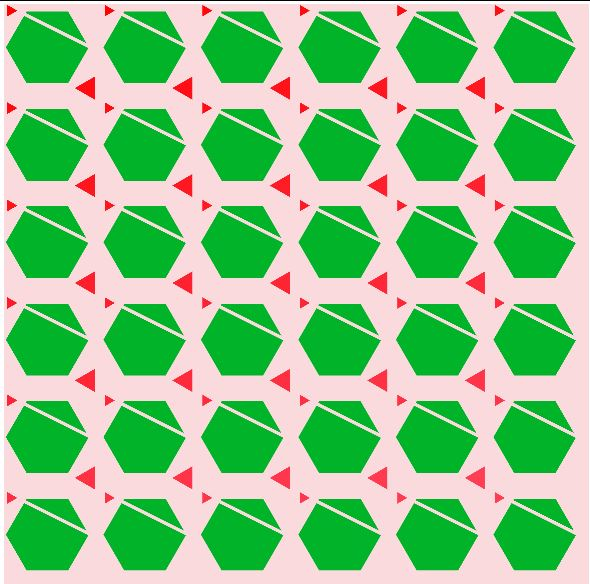

September 15, 2020
Exercise 1.1 - Loops and Color
- Required from us to create a canvas(500,500) and display grid which will show us the change of colors on the canvas.
- HSB color model is used to display colors in this exercise.
- Addition to Exercise 1.1 is code from Exercise 1.2 which allows us to move
canvas/grid around and to see the change of colors. Code also allows us to
'take screenshot' of the screen or save image everytime when we press ctrl+S.

Exercise 1.2 - Adding Interaction and saving Images
- Exercise 1.2 is an add-on to Exercise 1.1 in which we worked with For Loops and Color.
- Exercise enables user to move the Canvas, by pressing the left key of the mouse.
It also allows user to 'take' a screenshot of the Canvas. If user presses ctrl+S, an Image (screenshot) will displayed as saved on users PC.
- Image that user saves will saved in format of date and time, telling us when user exactly pressed ctrl+S.
Example can be seen in Images folder of Exercise 1.2. .

Excersise 1.3 - Circle Wheel
- Exercise 1.3 required from us to create and display a Color Wheel.
- Exercise required from us to be familiar with Math of circle and importance of SOH,CAH,TOA - In this specific case Sin(y) and Cos(x).
- Sin and Cos helped us to position the circle on the canvas by adding the constant variable of radius to it. Example:
let vx= (radius * cos(a)) +250;
let vy= (radius *sin(a)) +250;
- Exercise also includes code for Translation and Mapping, which is greatly used in Exercise 1.4.

Donec eget ex magna. Interdum et malesuada fames ac ante ipsum primis in faucibus. Pellentesque venenatis dolor imperdiet dolor mattis sagittis magna etiam.

Excersise 1.5 - Lerp Color
- In this Exercise, we learned how to use Lerp Color function provided by p5.
- Lerp Color function, lerpColor(), blends two colors to find a third color somewhere in between them. It takes three parameters: color1, color2 and amt.
- Amt parameter is the amount between the two values where 0.0 is equal to color1, 0.1 close to color1, 0.5 is in the middle, etc.
- Again for this exercise, we created Circle Wheel (Triangle fan), which we then later filled with colors we lerped using Lerp Color.

Excersise 1.5 - Lerp Color
- In this Exercise, we learned how to use Lerp Color function provided by p5.
- Lerp Color function, lerpColor(), blends two colors to find a third color somewhere in between them. It takes three parameters: color1, color2 and amt.
- Amt parameter is the amount between the two values where 0.0 is equal to color1, 0.1 close to color1, 0.5 is in the middle, etc.
- Again for this exercise, we created Circle Wheel (Triangle fan), which we then later filled with colors we lerped using Lerp Color.
Excersise 2.1 - Shape and Pattern
- In this Exercise, we started working on displaying various shapes (in this example circle in the middle of the canvas), which will lead us to work on learning how to create a pattern in further exercises.
- In this exercise, like in most of them, we are using variables that we used for creating Exercise 1.3 - Circle Wheel. numOfSegments, stepAngle, let radius.
- In function setup(), we created canvas, specified color and angle modes (In this exercise we worked in RADIANS).
- In function draw(), we used map function provided by p5 to map numOfSegments and radius values. Map function re-maps the number from one range to another. In example of radius in this exercise, map allowed us to increase or decrease radius as we move the mouse over canvas. If mouse key is closer to the center of the canvas, radius will be smaller, if its further away - radius will be greater.
- keyPressed function is added in this exercise again and it allows us to save a 'screenshot' of the Canvas if we press ctrl+S.

Excersise 2.2 - Rotation and Atan
- In this Exercise, we learned how to use rotation (rotate()) function provided to us by P5 and Atan2 function.
- Rotation function, rotate(), rotates a shape by the amount that is specified by angle parameter. Angle mode is important for this function to work and we can use it in either RADIANS or DEGREES.
- Atan2 function, calculates the angle in radians from a specified point to the coordinate origin as measured from the positive point on x-axis.
- In this exercise, we also used dist() function which calculates the distance between two points, as well as map() function which re-maps number from one range to another.
- For this exercise, we worked with variables numOfSquares and squareSize - size of squares is determined by dividing the width of the Canvas, 500, with numOfSquares we want to display on it.
- A for loop was created which first looped throuhgh y-axis values (j) and then throuhg x-axis values (i) in order to draw shape across the Canvas.

Donec eget ex magna. Interdum et malesuada fames ac ante ipsum primis in faucibus. Pellentesque venenatis dolor imperdiet dolor mattis sagittis magna etiam.

Donec eget ex magna. Interdum et malesuada fames ac ante ipsum primis in faucibus. Pellentesque venenatis dolor imperdiet dolor mattis sagittis magna etiam.
Week of 20th of October, 2020

Donec eget ex magna. Interdum et malesuada fames ac ante ipsum primis in faucibus. Pellentesque venenatis dolor imperdiet dolor mattis sagittis magna etiam.
Week of 27th of October, 2020
Donec eget ex magna. Interdum et malesuada fames ac ante ipsum primis in faucibus. Pellentesque venenatis dolor imperdiet dolor mattis sagittis magna etiam.

Donec eget ex magna. Interdum et malesuada fames ac ante ipsum primis in faucibus. Pellentesque venenatis dolor imperdiet dolor mattis sagittis magna etiam.